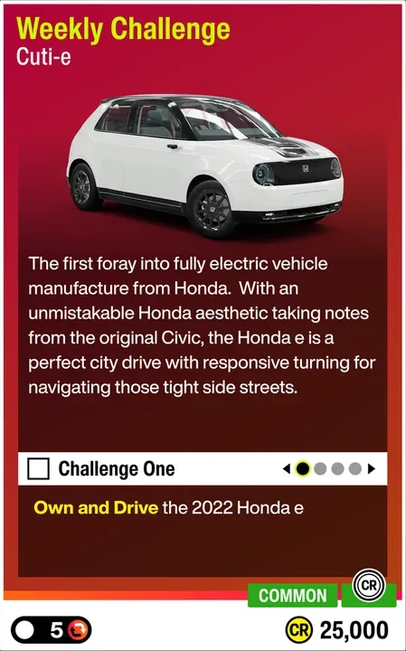

Weekly Challenge5 очков
01Cuti-e
Условие: 2022 Honda e: поездка → покраска → фото на Edamame Circuit → парковка на Daikoku Car Meet. Награда: 25 000 CR.
Как выполнить: Выполняйте главы по порядку. Сохраните новый цвет кузова; для фото достаточно Quick Shot на трассе. В Daikoku заезжайте на размеченное парковочное место. Машину можно получить за Hot Hatch Chasers.
Автомобиль и тюнинг: 2022 Honda e — заводская настройка, специальный тюнинг не требуется.
Условия: ForzaРешение: сообществоТюнинг: сообщество
Официальные условия · Гайд Spring, 03.09Советы сообщества — без проверки в игре. · Игровая плитка Spring · Точная игровая плитка Spring 03–10.09 из ForzaLabs